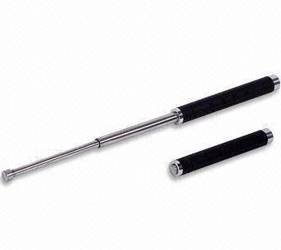
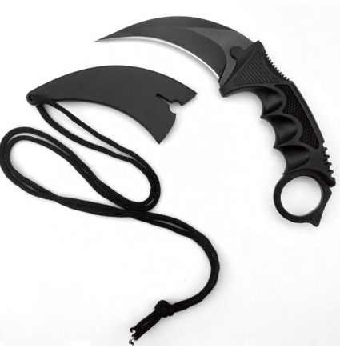
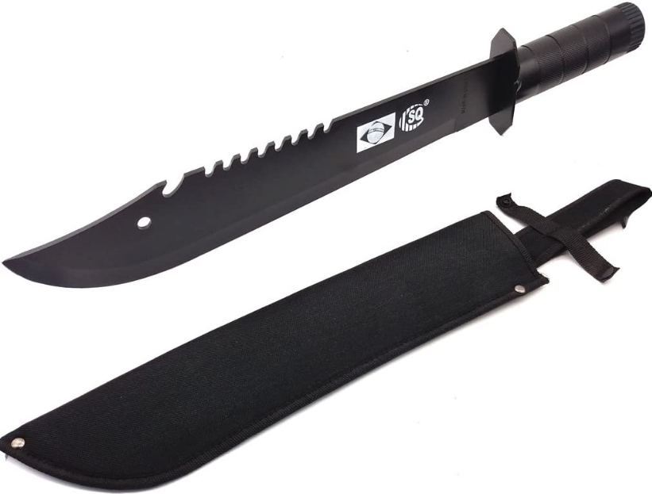
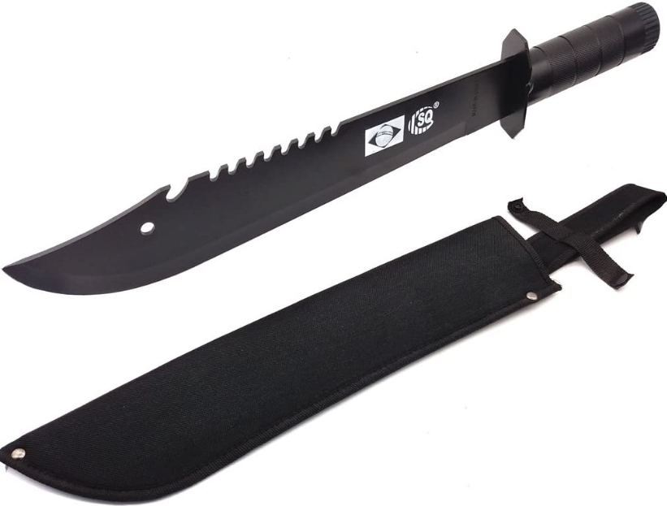
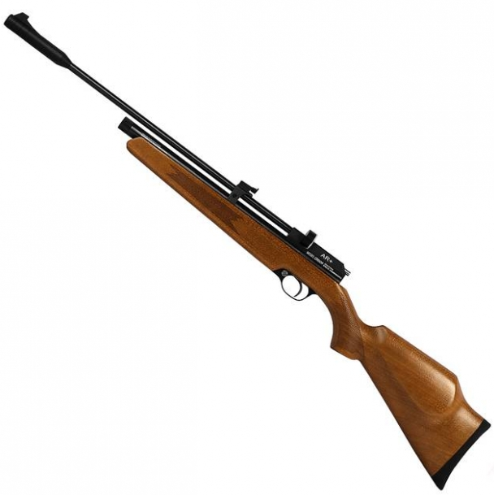

Itens de Defesa Pessoal
É imprescindivel que em momentos caóticos ou de crise, a pessoa possua alguma forma de se proteger, seja com armas ou ferramentas.
Aqui vai uma lista de sugestões de armas para sua auto-defesa na área urbana, na mata ou na sua fazenda:
Não-Letal
Pequeno porte
Kubaton: um bastão pequeno, pouco maior que a palma da mão, com ponta específica que potencializa a pancada rápida em pontos vitais, capaz de provocar dor profunda e neutralizar uma ação de ataque.


TASER: A arma de incapacitação neuromuscular por não ser letal, será ideal para Proteção e Defesa Pessoal, Qualquer cidadão maior de 21 anos poderá Adquirir e Portar sua Taser


Spray de pimenta: Se ainda se mantém no espaço urbano, uma boa forma de se projeter sem ter muita repecursão é com um spray de pimenta. Há hoje no mercado os “Jatos de Fluído Imobilizante” ou “Sprays de Gengibre”, que são novos, têm o mesmo efeito do spray de pimenta e dependendo do ponto de vista são até melhores. Como ainda não são previstos pelo decreto já que não têm capsaicina em sua composição, sua compra e uso é livre.

Grande porte
Bastões: podem provocar dor profunda por golpes nas regiões sensíveis do corpo, causando imobilidade momentânea e até mesmo atordoamento.


Letal
Pequeno porte
Faca, canivete: facas podem ser usadas e portadas no dia a dia, Os canivetes têm lâmina dobrável ou retrátil podendo ser portado de forma casual no bolso e produzir ferimentos graves.



Grande porte
Facão: por seu tamanho de lâmina, pode ser usado para defesa de propriedade para causar um grande dano à um invasor. É ideal para suportar golpes pesados sem sofrer danos.
 


Outros
As armas de pressão por ação de gás comprimido ou por ação de mola de calibre inferior a 6mm é considerada de uso permitido e seu porte é livre em todo o território nacional:
Pistola 5mm: com a munição 5mm, a pistola de pressão pode ser usado tanto para afugentar um invasor, tanto para matar algum animal de pequeno porte

Rifle de pressão: arma de pressão e grande porte, onde pode ser usado para afugentar invasores a distância ou pode ser usado para caçar pequenos animais.

Observação
Fazendeiros possuem direito a posse de até 4 armas na fazenda.
O artigo 5º da Constituição Federal de 1988 diz respeito às garantias e direitos fundamentais de cada cidadão e, precisamente no inciso II “ninguém será obrigado a fazer ou deixar de fazer alguma coisa senão em virtude de lei”.
o manuseio desses equipamentos de defesa pessoal deve ser feito depois de treinamento em locais sérios, para que você tenha segurança e saiba exatamente como reagir, caso passe por alguma situação inesperada.
Lembrem-se sempre que reagir só em último caso e com muita sabedoria. O melhor mesmo é tentar se prevenir, evitando os riscos.